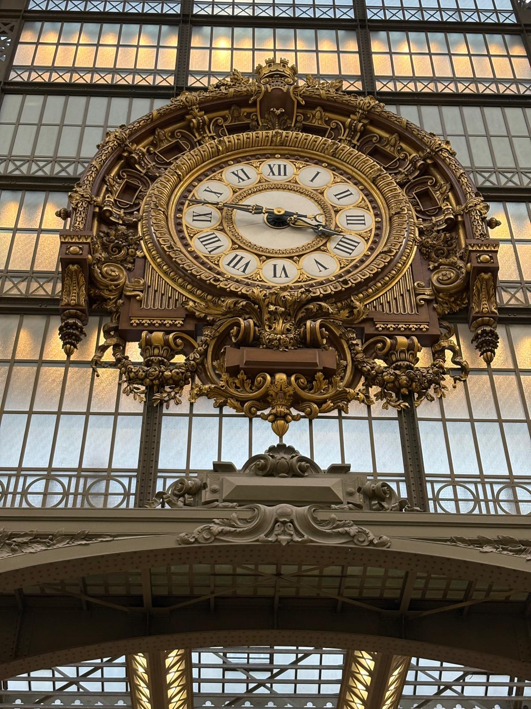

Tappa 1
La stazione ferroviaria (Gare d’Orsay)
Il museo nasce da un’ex stazione ferroviaria di fine Ottocento, riconvertita in spazio espositivo: la grande navata con l’orologio monumentale conserva l’atmosfera industriale originale, rendendo l’architettura parte integrante dell’esperienza artistica.
